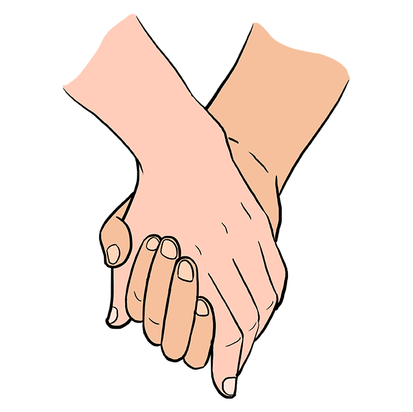

In a time of social isolation, it has become difficult to find love. Regardless of our current circumstances, many of our participants have found it impossible to find genuine connections in this day of swipe culture. We hope to change that by fostering intimate relationships based on sharing our stories and personalities instead of our profile pictures and filters.
“As [I] read, I fell in love the way you fall asleep: slowly, and then all at once.” - John Green
Get Beta Launch First AccessApply using the link about and fill out the preference form. Based on which program you choose, you will be asked to pay a postage fee.
You will recieve three anonymous initial letters that you will reply to every week via email or postage if preferred. You will be writing to each other for up to 3 months.
Each month, you will be asked to narrow your potential love. This is to make sure no one is double dating by the end.
If you have been writing back and forth for 3 months, you can now see each other in person or through Zoom!
1. You will be matched with an individual near your area so this love can continue once you have met!
2. If you do not connect with any of your matches during the program, you are free to let us know and get rematched!
Our goal is to make matches between individuals that will potentially make genuine connections through multiple aspects. You will be matched based on your input as well as based on your personality and interests. You can also chose to be matched completely randomly. At the end of the day, you are bound to meet someone who will appreciate you for your stories and experiences over your appearance or wealth.
Have Questions?
Email: blindloveletter@gmail.com
